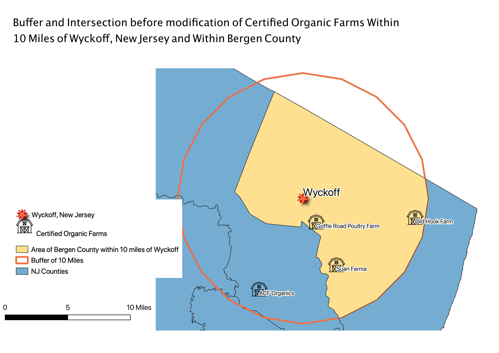

Homework 10: Analysis of
Christian Rasnake

Hello

Based on the above map, you can see different patterns illustrated. First, it is clear that the countries who are doing the most polluting are the more developed first-world countries. The United States and China are the most stand-out polluters in the world. There were some countries where there was no data available regarding carbon emissions, likely because they do not have the means to report this type of information in developing countries. It might be interesting to normalize this data across the countries by creating a ratio between carbon dioxide emissions and population, to see what country pollutes the most on a per capita basis.

Final Map
Data used for this project
Source of NJ Organic Farm Data
CSV of NJ Organic Farm Data
Source of NJ Shapefile